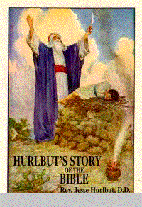
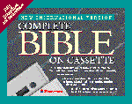
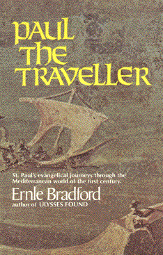
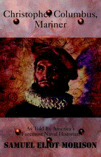
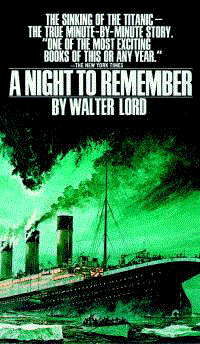
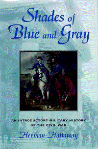

HURLBUT'S
STORY OF THE BIBLE
by Rev. Jesse Hurlbut, D.D., read by
Robert Whitfield. Hurlbut's Story of the Bible has its roots in the
old custom of parents telling their children stories from the Bible.
One of those parents who kept this custom particularly alive and
meaningful was Dr. Jess Lyman Hurlbut. Like many great works of
literature, the stories that make up this book were told and retold
innumerable times before being set down on paper. Hurlbut's Story of
the Bible contains one hundred sixty-eight stories from the Bible,
each one complete in itself, while together combining to form one
narrative. It is the complete Bible story, running from Genesis to
Revelation, told in the language of today for both young and old
alike. This digitally-mastered set of thirteen one and one-half hour
cassettes is simply outstanding. An excellent way to access the
message of the Bible as you drive in your car, work around the house
(or garden), or relax on the porch in your rocking chair. Here are
some quotes from reviewers: "Beautiful in every way; should be in
every Christian home where there are children." (Daniel A. Poling)
"The best attempt to retell the Bible story for the young of which I
have any knowledge." (Robert E. Speer, The Board of Foreign Missions
of the Presbyterian Church in the U.S.A.) "There is no better book of
its kind." (S. Parkes Cadman) Purchase: $85.95; 45-Day Rental: $14.95
BLACKSTONE
AUDIOBOOKS, BOX 969, Ashland, OR
97520.
1-800-729-2665.
Phone: 541.482.9239; Fax: 541.489.9294. E-Mail: schnibbe@cdsnet.net
NIV
Complete Bible On Cassette Tape.
The popular and highly understandable
New International Version Bible is presented in its entirety on 48
premium quality audio cassettes. Each verse comes alive in this
dramatic, fully-orchestrated, multi-voiced production complete with
sound effects. State-of-the-art recordings assure the highest level
of fidelity and sound reproduction. Listen to God's Word while you
drive, exercise, or simply relax in the comfort of your home. A
magnificent, fully orchestrated wash of music enhances the
multi-voice dramatic readings to evoke the full impact and beauty of
Scripture. The convenient cassette format lets listeners refresh
their spirits at those times when its better to listen than read.
Combining highest-quality production with a new low price, The
Complete Bible on Cassette is an exceptional value at $89.95. A
particularly useful feature is that the cassettes are identified as
to which portions of the Bible they cover. Genesis-1Samuel 14 is
contained on cassettes 1-12; 1Samuel-Psalm 106 is on cassettes 13-24;
Psalm 107-Malachi is on cassettes 25-35; and The New Testament,
Mathew-Revelation is on cassettes 37-48. This outstanding set of
cassettes is ideal for Christian schools and libraries, for public
school libraries, for church libraries, and for homes.
Zondervan
Publishing House, 5300 Patterson
Avenue SE, Grand Rapids, Michigan 49530. E-Mail: zdsonline@zph.com,
Toll free telephone:
1-800-727-3480.
Books
On Tape, Inc. records all
selections in their full and unabridged form. At Books On Tape, when
you have rented or purchased 10 audiobooks, whether at one time or
separately, you get one FREE rental. You also get a 10% discount on
rentals of three or more books ordered at one time. The rental period
for each book is 30 days from the time you receive it. Listening time
for a book is generally 8-15 hours. When Books On Tape started in
1975, they offered four titles. Now they are proud to offer over 4500
titles! About 20 new titles are added each month. Books On Tape Inc,
P.O. Box 7900, Newport Beach, Ca 92658. Toll free:
800-626-3333
E-Mail: botcs@booksontape.com
Here are some great offerings from
Books On Tape:
THE
EARL OF LOUISIANA Written by
A.J. Liebling, Read by Walter Zimmerman. Earl Long lived all his life
under the shadow of his more brilliant and famous brother, it had
been that way when they were boys--Huey led, Earl followed. It was
that way during the years of Huey's ascendancy in Louisiana politics.
No matter what Earl did, he couldn't match Huey. But Earl lived 25
years longer than his brother and thus did some of the things that
Huey could not do. He was governor of Louisiana three times. At the
time of his death in 1960 he gave every indication that he would
return for a fourth term. He was one of the great political
characters of this century. "Brilliantly impressionistic. Gets close
to the truth about the man and his era. The best account yet to
appear of Earl Long." --T. Harry Williams. Catalog number: 2302, Six
1.5 hour cassettes. Rental price: $9.95. Books
On Tape, Inc.
800-626-3333
HUEY
LONG
Written by T.Harry Williams, Read by
Dick Estell. First, you have to understand that this is not only an
important book, but an enjoyable one, fascinating and beautifully
written. It took the sweepstakes--the National Book Award and the
Pulitzer Prize. Second, let's put Huey in perspective. He was a kind
of a white Jesse Jackson. He called up strong emotions. No one was
neutral about him. Finally, he was one of the most extraordinary
figures in American political history. He was a great politician. He
played the part of a redneck, but at his death was nearly FDR's equal
in influence. "Captures the essential quality of Huey Long; the gut
politician, the man who intuitively sensed and answered the
unarticulated needs of his time." (B-O-T Editorial Review Board).
Catalog number: 2275-A, Nine 1.5 hour cassettes, Rental price:
$17.50. Books
On Tape, Inc.
800-626-3333
PAUL
THE TRAVELLER St. Paul's
evangelical journeys through the Mediterranean world of the first
century. Read by Walter Zimmerman. In the autumn of 59 A.D., a bald
middle-aged man set out by ship along the coast of Asia Minor, bound
for Rome and a trial before the Emperor. His name was Paul, a Jew of
Tarsus, a Roman by citizenship, a revolutioinary by choice. Author
Ernle Bradford brings to life the man we know as Saint Paul, the 13th
apostle and great Christian missionary of the first century. Paul did
not come to his work easily, indeed was a leader of the opposition to
Christianity. It took a miracle on the road to Damascus to convince
him that his true master was Jesus. An eloquent biography of a man
who changed history. History enthusiasts will marvel at the
descriptions of Mediterranean sailing vessels of the 1st century and
the precariousness with which sailors of that era put to sea. Ending
up in the right harbor in the right port was a more difficult task
than some may have thought. Too, the Roman ships may have had better
facilities, the galley for example, than those in which Columbus put
to sea some 1400 years later! Catalog number: 2380, Eight 1.5 hour
cassettes, Rental price: $16.50. Books
On Tape, Inc.
800-626-3333
THE
BLUE NILE: FROM SOURCE TO SEA
by Alan Moorehead. Unabridged
narration by Patrick Tull. The Blue Nile meets the White Nile at
Khartoum and flows on through the Sudan and Egypt to the sea.
Moorehead first traces the might river to its source then tracks its
history from Napoleon's invasion of Egypt, through the Turkish
occupation of the Sudan up to the British punitive invasion of
Ethiopia, covering the river's history between 1798 and 1869. The
story is dominated by four men: James Bruce, a Scot and the first
white man to journey to the Nile's source; Napoleon; the Turk,
Mohammed Ali who sent his son to conquer the Sudan in a ruthless
quest for gold and slaves; and Emperor Theodore of Ethiopia, a tyrant
whose ill-treatment of British captives brought retribution on his
head in the form of a great Anglo-Indian army. #88620, 8 cassettes,
12 hours, Rental Price: $16.50. Recorded Books, Inc., P. O. Box 409,
Charlotte Hall, MD 20622.
800.638.1304
E-Mail: recordedbooks@recordedbooks.com
The
New Testament
The Gospels: Matthew, Mark, Luke and
John (Set 80100) and Acts, Epistles and Revelation (Set 80140) The
Gospels of Matthew, Mark, Luke, and John come alive in this
unabridged set of cassette recordings narrated by James Hamilton.
This is, of course, an unabridged recording, true to the King James
Bible wording, but James Hamilton's effective narration is a
delightful treat, making each listening session an enriching
experience and adding much to the pleasure of the Gospels. In like
manner, the Acts, Epistles, and Revelation are brought to new heights
by Hamilton's narration, giving the listener perhaps a clearer vision
of these books than at any time previous. Each set contains 8
cassettes of about 12 hours. Rental Price: $16.50. Recorded Books,
Inc., P. O. Box 409, Charlotte Hall, MD 20622.
800.638.1304
E-Mail: recordedbooks@recordedbooks.com
THE
OREGON TRAIL
by Francis Parkman | Read by Frank
Muller | 4 cassettes | Abrudged | Item # E41024 | ISBN: 1-57270-024-6
| $21.95. For anyone who has ever been captivated by the American
West! Hear an eye-witness account of one of the grandest adventures
in American history. Francis Parkman's journal, written more tha 150
years ago, in 1846, captures the color, spirit, and perspective of a
Harvard-educated Bostonian traveling in the Rocky Mountains and
living among the Dakota Sioux. Just 23 years old at the time, Parkman
expresses the exuberant confidence of his era. This journal
established his credentials as one of the foremost historians of the
19th century. There are many who consider Francis Parkman to be the
greatest of American historians because of his rich and colorful
narrative style of writing. Francis Parkman (1823-1893) set off on
his trip west upon graduation from Harvard Law School. He is deemed
one of the foremost American historians and a prize in his name is
awarded annually by the Society of American Historians. Frank Muller,
a renowned reader of audio books and a stage and screen actor, lives
in the Los Angeles areas. He has been called by the Library
Journal the first true superstar reader to appear in the world of
audio texts. Frank Muller's outstanding reading of this history
allows us to be involved in the drama. The archetypal West is a story
of Indians and mountain men, heroic competence and natural disaster,
horses and hope. Francis Parkman's famous history of the 1846
expedition will hold students spellbound. This is a great audio tape
for groups of students to hear together or for individuals to listen
to with the privacy of a headset. The
Audio Partners Publishing Corp.,
1133 High Street, Auburn, CA 95603. Toll Free:
800.231.4261
JEWS,
GOD AND HISTORY by Max Dimont
read by Anna Fields. Vitality floods its pages. Philosophers and
king, warriors and merchants, poets and financiers come alive as the
story ranges across time and the globe. From ancient Palestine
through Europe and the Orient, to America and modern Israel, Max
Dimont shows how the saga of the Jews is interwoven with the history
of virtually every nation on earth. This newly revised and updated
edition, with 1,001 brilliantly narrated episodes, tells the story of
a people escaping annihilation and cultural death, fighting, falling
back, advancing. Infused with an almost miraculous vitality, they
have survived the fall of civilizations and have triumphantly
contributed to man's spiritual and intellectual heritage for some
four thousand years. This acclaimed work spans centuries and circles
the globe to tello the astounding 4,000-year old story of the Jewish
people and their triumphant contributions to the history of Asia,
Europe, and America. Following the first publication of his
bestselling Jews, God, and History, Max I. Dimont lectured
extensively on Jewish history throughout the United States, Canada,
Southe Africa, Brazil, and Finland until his death in 1992. These
thirteen one and one-half hour cassettes provide the listener with a
remarkable store of information about the Jewish people. This set
belongs in all school libraries and media centers. (2187) Thirteen
11/2-hour cassettes. Purchase: $85.95; 45-Day Rental: $14.95.
BLACKSTONE
AUDIOBOOKS, BOX 969, Ashland, OR
97520.
1-800-729-2665.
E-Mail: schnibbe@cdsnet.net
CHRISTOPHER
COLUMBUS, MARINER by Samuel
Eliot Morison read by Frederick Davidson. Students of all ages, their
parents, and their grandparents will marvel at this magnificent tale
of the voyages of Christopher Columbus, one of the great adventure
stories of all time. So closely does this event fit into the
historical fabric of knowledge that these tapes will be a real asset
to school libraries and media centers, in college and university
libraries, and in private homes. A great way to learn about the
voyages of Columbus. His first journey across thousands of miles of
unknown ocean, amid the mutinous grievances and tensions of his crew,
was not only one of the most significant achievements of recorded
human history, but was also a demonstration of Columbus's supremacy
as mariner and navigator. For while he had faults and defects which
brought turmoil to his personal life, "there was no flaw, no dark
side to the most outstanding of all his qualities&emdash;his
seamanship." This is the story of Columbus the seaman, told by a
skilled historian, noted writer, and accomplished navigator who has
actually followed Columbus's original courses under sail. Admiral
Morison underwent in sailing vessels the same hazards of wind and
sea. The result was the definitive biography, Admiral of the Ocean
Sea (also available from BLACKSTONE AUDIOBOOKS), which was awarded a
Pulitzer Prize. (2159) Five 11/2-hour cassettes. Purchase, $39.95;
30-Day Rental, $10.95. BLACKSTONE
AUDIOBOOKS, BOX 969, Ashland, OR
97520.
1-800-729-2665.
E-Mail: schnibbe@cdsnet.net
A
NIGHT TO REMEMBER by Walter Lord
read by Fred Williams. The movie about Titanic won numerous awards
and set records of attendance by the movie-going public. These tapes
are a wonderful way to hear again and learn in depth about that
tragic night. This is the story of the sinking of the Titanic; the
true minute-by-minute account. People of all ages, and especially
middle and high school students, will relish this audiotape rendition
of the fateful night that Titanic hit an iceberg and sunk. Walter
Lord crossed the Atlantic in 1926 on the Olympic, the sister ship of
the Titanic. He asked questions and read everything that he could
find concerning the lost liner. A Night to Remember is the result of
his outstanding research. This is the story of the "unsinkable"
Titanic. She was four city blocks long, with the latest, most
ingenious safety devices, a French "sidewalk café", private
promenade decks&emdash;but only twenty lifeboats for the 2,207
passengers and crew on board. Gliding through a calm sea, disdainful
of all obstacles, the Titanic brushed an iceberg. Two hours and forty
minutes later, she upended and sank. Only 705 survivors were picked
up from her half-filled boats. And she had been called "the ship that
God Himself couldn't sink." (2190) Four 11/2-hour cassettes,
Purchase, $32.95; 30-Day Rental, $9. BLACKSTONE
AUDIOBOOKS, BOX 969, Ashland, OR
97520.
1-800-729-2665.
E-Mail: schnibbe@cdsnet.net
SHADES
OF BLUE AND GRAY
by Herman Hattaway; read by Lloyd James.
An introductory military history of the American Civil War, Shades of
Blue and Gray places the 1861-1865 conflict within the broad context
of evolving warfare. Emphasizing technology and its significant
impact, Hattaway includes valuable material on land and sea mines,
minesweepers, hand grenades, automatic weapons, the Confederate
submarine, and balloons. The evolution of professionalism in the
American military serves as an important connective theme throughout.
Hattaway extrapolates from recent works by revisionists William
Skelton and Roy Roberts to illustrate convincingly that the
development of military professionalism is not entirely a post-Civil
War phenomenon. Informative and clearly written, enhanced by graceful
prose and colorful anecdotes, Shades
of Blue and Gray will appeal to all
listeners. Herman Hattaway is Professor of History at the University
of Missouri-Kansas City. He is the author or co-author of numerous
books, including Why the South Lost the Civil War, How the North Won,
and General Stephen D. Lee, all past selections of the History Book
Club. (2201) Eight 11/2-hour cassettes. Purchase: $56.95; 30-Day
Rental: $12.95. BLACKSTONE
AUDIOBOOKS, BOX 969, Ashland, OR
97520.
1-800-729-2665.
E-Mail: schnibbe@cdsnet.net

Click
Here to Go to The Social Studies
Educator
|

Click
Here to Go to Southeast Regional Social Studies
Conference
|

Click
Here to Go to the Alabama Council for the Social
Studies
|

Inquiries and/or comments about this site should be sent to jstockard@edla.aum.edu